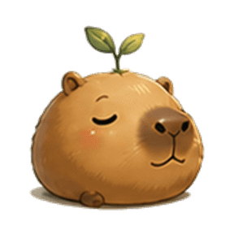

让角色动起来，而不是让图片弹起来。
卡皮巴拉基础形态 · 眨眼、轻微转头、耳朵与叶片变化的逐帧样片
同一张图，整体变形

眼睛与表情没有变化
16 张不同姿态，逐帧播放
加载动作素材…
这次改了什么：右侧眼睑、头部和表情来自不同绘制帧，代码只负责播放和落脚位置对齐。没有给整张图片加缩放、旋转或拉伸。
样片边界：这是生成的逐帧动作试作，纹理与轮廓仍可能轻微跳动。它还不是完整的走路、趴下或伸懒腰动画，也没有替换其它角色和形态。当前支持单次播放，避免常驻耗电。
卡皮巴拉基础形态 · 眨眼、轻微转头、耳朵与叶片变化的逐帧样片

这次改了什么：右侧眼睑、头部和表情来自不同绘制帧，代码只负责播放和落脚位置对齐。没有给整张图片加缩放、旋转或拉伸。
样片边界：这是生成的逐帧动作试作，纹理与轮廓仍可能轻微跳动。它还不是完整的走路、趴下或伸懒腰动画，也没有替换其它角色和形态。当前支持单次播放，避免常驻耗电。